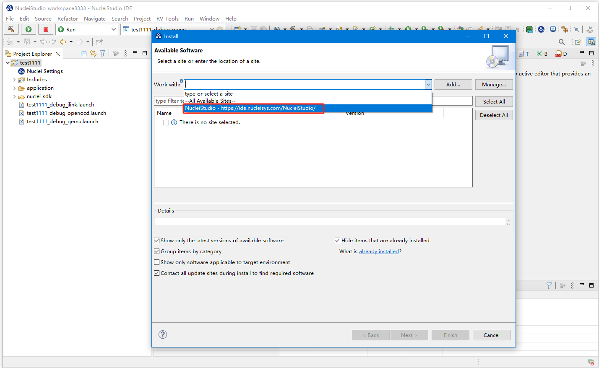
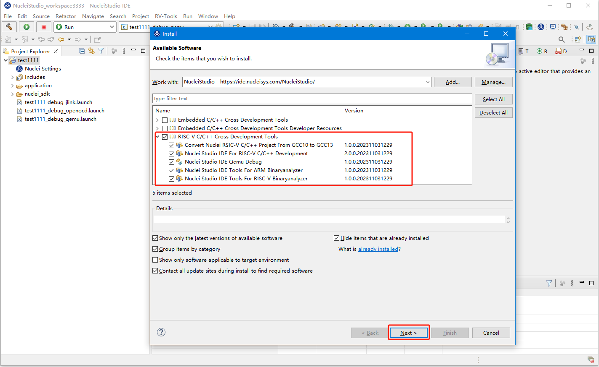
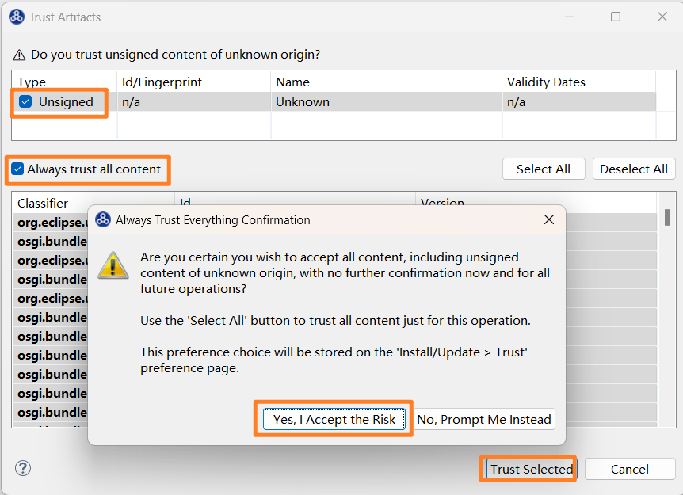

更新 Nuclei Studio 2023.10 到最新修正版本¶
2023.11.06上传的Nuclei Studio 2023.10版本存在一些问题，我们进行了修正，并于 2023.11.17 13:30替换线上2023.10版本。
问题描述¶
2023年11月06日发布的Nuclei Studio 2023.10版本中存在一些问题,影响用户使用:
- build tools的busybox存在问题导致make 带 pre- post- steps时编译出问题
- Nuclei Settings中corner cases在特定场景下会出错
- Nuclei Settings的打开方式影响工程中其他文件的打开方式
- 在QEMU中使用V扩展时，没有传入RVV length
- 修复打开一个全新的workspace，创建新的工程的时候，能够创建同名项目的问题，重开workspace即可解决这个问题
我们重新做了一些变更，以修复以上问题：
- 修改并发布Nuclei Studio Plugins 2.1.0， 上传到插件更新网站
- 修改并发布Windows build-tools 1.2，替换了线上的Windows Build Tools 2023.10
- 发布了新的Nuclei Studio 2023.10，替换了线上的Nuclei Studio 2023.10
升级Nuclei Studio 2023.10 到最新版本的方法¶
如果您的Nuclei Studio 2023.10，是在2023年11月18日之前下载，版本中存在的上述问题可能会引响您的使用体验， 您可以选择手动进行升级，也可以选择重官网上下载我们最新发布的版本。
对2023年11月18日之前下载了Nuclei Studio 2023.10进行升级¶
如果您是在2023年11月18日之前下载了Nuclei Studio 2023.10，可以通过以下方式更新您的Nuclei Studio 2023.10 到最新版本
1. 升级Nuclei Studio Plugins
在Nuclei Studio菜单中找到Help->Install New Software, 然后在Install工具的Work with
选中NucleiStudio - https://ide.nucleisys.com/NucleiStudio/,下面会列出所有待更新的插件。

在弹出的插件列表中选中需要升级的插件，我们选中RISC-V C/C++ Cross Development Tools, 然后Next。

在升级过程中，Nuclei Studio会询问Trust Artifacts时，操作如下图，选择Trust Selected, 然后升级完成，Nuclei Studio会重启。至此Nuclei Studio Plugins升级完成。

2. 升级build-tools
Linux版本不需要执行此步骤，只需要确保系统中装了
make工具就行。
下载build-tools-1.2，并替换Nuclei Studio 2023.10中的NucleiStudio\toolchain\build-tools中内容。
关于这部分，可以查阅编译工程时，使用了Pre-build Command/Post-build Command时报错中的详细说明。
经此两步，完成了对Nuclei Studio 2023.10的升级。
从官网下载最新的版本¶
如果不想做手动升级工作，可以直接从我们的网站上下载最新的Nuclei Studio 2023.10。